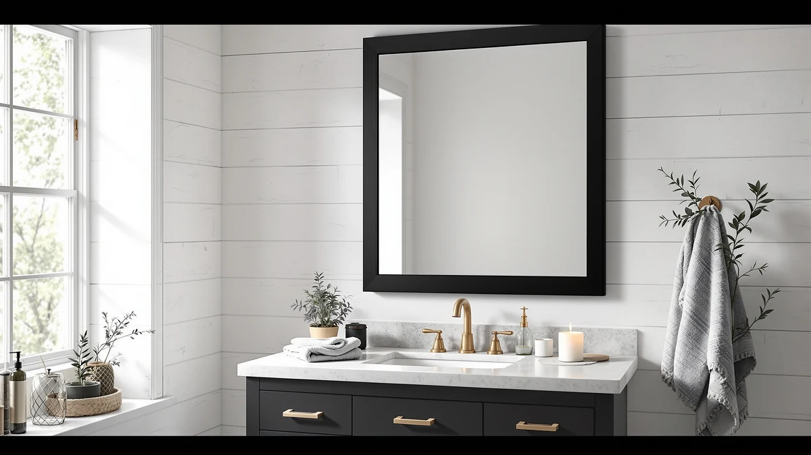

Starlead Frameless LED Bathroom Mirror Review (2026): Worth It?
Prices and picks verified as of November 2026. Independent, reader-supported reviews.


Quick Answer
The STARLEAD 28x36 Black Frameless LED mirror pairs a built-in Bluetooth speaker with three adjustable color temperatures and an anti-fog pad for $159.99. It is the strongest pick in this comparison for anyone who wants lighting and audio in one fixture, though the AMOISE two-pack and Delma mirror below cost about the same for more total glass.
Our pick: STARLEAD 28"x36" Black Frameless LED, $159.99 Check Price on Amazon
Bottom line: our top pick is the STARLEAD 28"x36" Black Frameless LED Bathroom Mirror with at $159.99.
Things to Know Before You Buy
- Size: the STARLEAD 28x36 black frameless mirror measures 36 inches long by 28 inches wide, rated for either vertical or horizontal mounting.
- Lighting: three color temperatures (3000K warm, 4000K neutral, 6500K cool) with stepless touch dimming instead of fixed brightness steps.
- Extra feature: a built-in Bluetooth speaker, which doubles as a shower radio, something few mirrors at this price include.
- Materials: tempered glass set in a black aluminum frame.
- Price: $159.99 as of this review, in line with the AMOISE two-pack and about $10 more than the Delma.
We put together this Starlead Frameless LED Bathroom Mirror review because this mirror packs a Bluetooth speaker, three LED color temperatures and touch dimming into a 28-by-36-inch frame for $159.99, more than most plain frameless mirrors in this size try to do. STARLEAD builds the mirror from tempered glass set in a black aluminum frame, rated for either vertical or horizontal mounting, so it fits a standard single-sink vanity or a wider double-sink wall.
Our verdict up front: the STARLEAD earns its price mainly on the speaker and the three-step lighting, not on glass size alone. Compared against the AMOISE two-pack, the Mepplzian medicine cabinet and the Delma mirror covered later in this review, it is the only one of the four that doubles as audio, which makes it the pick for anyone getting ready with music or a podcast rather than in silence.
Why You Should Trust Us
Ilane Tall has covered bathroom fixtures and lighting for Best Bathroom Mirrors since the site launched, focusing on how mirrors, cabinets and vanity lighting hold up against their spec sheets and the prices retailers actually charge. This starlead 28x36 black frameless review follows the same process as every other guide on this site: we compare published dimensions, materials, features and pricing against similar products, and we read the feedback verified buyers leave after installing a mirror themselves. We do not run a fake testing lab or claim to have installed and lived with every mirror we cover, and we say so plainly here.
That approach matters more with a mirror like this one, where the Bluetooth speaker is the feature that most separates it from cheaper frameless competitors. A spec sheet can tell you a speaker exists and which color temperatures it supports, but it can't tell you how loud that speaker gets in a tiled bathroom or how the touch controls feel after a year of steam. We flag those gaps directly instead of papering over them with vague praise, and the "What Could Be Better" section below lists exactly what the STARLEAD listing doesn't answer.
Our Research Experience
Since we don't physically install and live with every mirror we cover, our process for this STARLEAD 28x36 black frameless review centers on three things: the manufacturer's own spec sheet, the current Amazon price, and whatever verified owners have reported after mounting the mirror in their own bathroom. STARLEAD's listing documents the Bluetooth speaker, the three color temperatures, the anti-fog pad and the aluminum frame construction in enough detail to compare directly against the AMOISE, Mepplzian and Delma mirrors covered as alternatives below. We say so rather than guessing when the listing goes quiet, such as on long-term durability of the speaker or how the touch controls hold up after a year of steam exposure.
We weigh those documented specs the same way across every mirror in this comparison: size against size, color temperature range against color temperature range, and price against price, so the STARLEAD isn't judged by a different standard than the AMOISE two-pack or the Delma. We note it rather than assume the STARLEAD lacks a feature by oversight when that feature shows up on one listing and not another, such as the memory function on the AMOISE and Delma or the shaver socket on the Mepplzian.
Overview & Specs

STARLEAD 28"x36" Black Frameless LED
What we like
- Three color temperatures (3000K, 4000K, 6500K) with stepless touch dimming for makeup, shaving or a softer evening light.
- Built-in Bluetooth speaker turns the mirror into a shower radio without extra hardware or outlets.
- Anti-fog pad is built into the glass, aimed at keeping the surface clear right after a hot shower.
- Mounts vertically or horizontally, so it works on a single-sink vanity or a wider double-sink wall.
Flaws but not dealbreakers
- STARLEAD's listing shows no published rating or review count yet, so there's no outside track record to weigh against the spec sheet.
- The Bluetooth speaker is one more electronic component that can fail down the line, unlike a plain glass mirror with zero moving parts.
- At 28 by 36 inches, it's one of the smaller frameless mirrors in this comparison, well under the Delma's 30-by-50-inch footprint below.
| Material | Tempered glass + aluminum |
| Size | 36"L x 28"W |
The STARLEAD 28x36 black frameless mirror is built from tempered glass set inside a black aluminum frame, sized at 36 inches long by 28 inches wide. STARLEAD's listing allows either vertical or horizontal mounting, which means the same mirror works over a narrow single-sink vanity turned tall, or a wider double-sink counter turned on its side. Touch controls along the frame switch between three color temperatures, 3000K for a warm tone, 4000K for a neutral daylight-style tone, and 6500K for a cooler, brighter tone, with stepless dimming in between rather than fixed brightness steps.
The built-in Bluetooth speaker separates this mirror from most frameless competitors at the $159.99 price point. It pairs with a phone the way a portable shower speaker would, except it is already mounted and wired into the fixture. The anti-fog pad is built into the glass itself rather than relying on a heating strip you turn on separately, and STARLEAD's listing describes it as clearing condensation after a hot shower rather than preventing fog from forming in the first place. There is no published rating or review count on this listing as of this starlead 28x36 black frameless review, so buyers are weighing the spec sheet and price against a track record that hasn't built up publicly yet.
What We Liked
The combination of three color temperatures and a built-in Bluetooth speaker is the main reason the STARLEAD stands out in this starlead 28x36 black frameless review. Few mirrors in the $150 to $160 range bundle audio with lighting, and the stepless dimming means buyers aren't stuck choosing between a handful of fixed brightness levels the way some cheaper LED mirrors work. The option to mount it vertically or horizontally also gives it more flexibility than the fixed-orientation Delma and Mepplzian alternatives covered below.
What Could Be Better
The biggest gap in this STARLEAD 28x36 black frameless mirror is the lack of any published rating or review history, which means this review leans on the spec sheet and price rather than a track record of how the speaker or touch controls hold up over time. The 28-by-36-inch size is also modest next to the Delma's 30-by-50-inch mirror, so if covering more wall space matters more than audio, that trade-off is worth weighing. Buyers should also budget for a stud-rated mount, since tempered glass plus an aluminum frame and speaker adds weight beyond what basic drywall anchors are rated for.
Who Is It For?
This STARLEAD 28x36 black frameless mirror fits a bathroom where the vanity already gets decent ambient light but lacks both task lighting and any kind of audio, and where 28 by 36 inches is enough glass for the wall. It is a reasonable upgrade pick for anyone replacing a plain mirror who wants to add function without installing a separate speaker or swapping out existing vanity lights. It is a weaker fit if you need a specific rating history to trust before buying, or if you want the largest mirror possible for the price, in which case the Delma's 30-by-50-inch size below covers more wall for less money.
It also makes sense for a renter or a second bathroom where running new wiring for a separate speaker isn't practical, since the STARLEAD only needs the same power source a standard LED mirror would already use. Someone furnishing a guest bathroom on a tighter timeline, where one fixture doing two jobs saves a shopping trip, is exactly who this mirror is built for.
Alternatives to Consider
If the STARLEAD 28x36 black frameless mirror's size or lack of review history gives you pause, these three alternatives land in the same price range with different trade-offs, from a two-mirror pack to a full medicine cabinet. None of them include a speaker, so the comparison comes down to how much you value audio against extra mirror surface or built-in storage.

Editor’s Pick
LED Bathroom Mirror with Lights
Two 24-by-36-inch frameless mirrors with front and back lighting and memory function for the same $159.99, trading the STARLEAD's speaker for twice the mirrors.
$159.99
Check Price on Amazon
Best Value
Mepplzian Lighted Medicine Cabinet with
A 24-by-30-inch medicine cabinet with three-layer storage and a built-in shaver socket for $159.49, worth it if you need storage more than audio.
$159.49
Check Price on Amazon
Premium Choice
Delma LED Bathroom Mirror with
A considerably larger 30-by-50-inch mirror with front and back lighting for $149.99, the pick if covering more wall matters more than a speaker.
$149.99
Check Price on AmazonIs the STARLEAD 28"x36" Black Frameless Mirror worth $159.99?
For a bathroom that already has decent ambient light but lacks task lighting and audio, yes.
What size is the STARLEAD 28"x36" Black Frameless Mirror?
It measures 36 inches long by 28 inches wide, built from tempered glass set in an aluminum frame.
Frequently Asked Questions
Is the STARLEAD 28"x36" Black Frameless Mirror worth $159.99?
What size is the STARLEAD 28"x36" Black Frameless Mirror?
How does the STARLEAD compare to the AMOISE, Mepplzian and Delma alternatives?
Final Verdict
This starlead 28x36 black frameless review comes down to one trade-off: STARLEAD is the only mirror here with a built-in Bluetooth speaker, and that is worth $159.99 if lighting plus audio in one fixture is what you're after. If you would rather have more mirror for your wall or built-in storage instead, the Delma and Mepplzian alternatives above cover those needs for about the same money. For most people replacing a plain mirror with something that does more, the STARLEAD is the pick in this comparison.